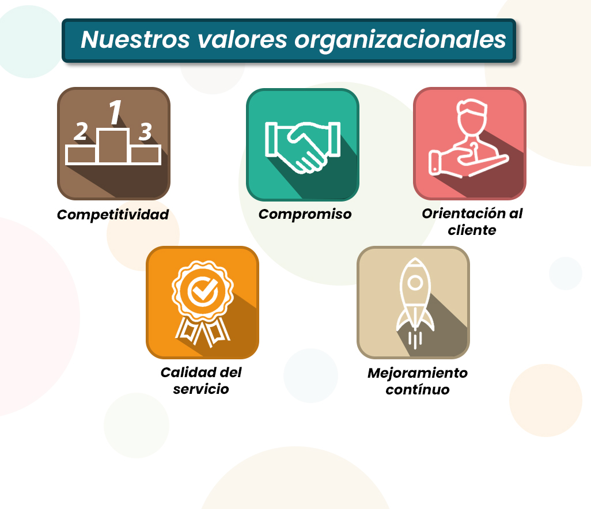

Descubre cómo el estudio de la sociedad impacta el funcionamiento y el éxito empresarial.
La sociología organizacional aplica los principios y métodos de la sociología al estudio de las organizaciones. Examina las estructuras sociales, las interacciones, la cultura y el comportamiento dentro de las empresas y cómo estos se ven influenciados por el entorno social, económico y político.
Entender los fundamentos sociológicos proporciona una base sólida para analizar los desafíos organizacionales y desarrollar estrategias efectivas.
La aplicación de la sociología en las organizaciones puede generar mejoras significativas en diversas áreas:
La etnografía es un método de investigación cualitativo que implica la inmersión del investigador en el entorno organizacional para comprender en profundidad su cultura, prácticas y dinámicas desde la perspectiva de sus miembros.
A través de la observación participante, entrevistas y análisis de artefactos culturales, la etnografía revela insights valiosos sobre el funcionamiento interno y las experiencias de los empleados.
La axiología, el estudio de los valores, es crucial para comprender las bases éticas y morales que guían las decisiones y comportamientos dentro de una organización. Analizar los sistemas de valores ayuda a identificar los principios fundamentales que dan forma a la cultura y la responsabilidad social corporativa.
Alinear los valores organizacionales con los de sus miembros y la sociedad contribuye a la cohesión, la motivación y una reputación sólida.

-David Levet
En conjunto, los estudios sociológicos, etnográficos y axiológicos ofrecen una comprensión profunda y multidimensional de las dinámicas sociales y organizacionales. Mientras los estudios sociológicos proporcionan un marco estructural y teórico, la etnografía permite captar la vida cotidiana desde dentro, y la axiología revela los valores que guían decisiones y comportamientos. Integrar estos enfoques es clave para mejorar el desempeño de las organizaciones, fortalecer la cultura institucional y responder de forma ética y contextualizada a los desafíos sociales actuales.
-Jhovanny Yuca
En conclusión, la forma en que las personas se relacionan en el trabajo es clave para que a la empresa le vaya bien. Cosas como el buen trabajo en equipo, una comunicación clara, el ambiente laboral que tenemos, cómo manejamos los problemas y saber quién hace qué, afectan directamente la productividad, qué tan a gusto está la gente, las nuevas ideas y si el personal valioso se queda con nosotros. Los estudios que hicimos sobre nuestra forma de trabajar y nuestros valores nos ayudan a entender mejor cómo funcionamos por dentro y cómo todo esto influye en los resultados, dándonos pistas para mejorar.
-Isaac Hernández
Comprender los fundamentos sociológicos dentro de una organización permite identificar las dinámicas humanas que afectan directamente su desempeño. Elementos como la estructura social, la cultura organizacional y las relaciones entre grupos influyen en la eficiencia, el clima laboral y la adaptación al cambio. Los estudios etnográficos brindan una visión profunda del comportamiento real de los empleados, mientras que los estudios axiológicos permiten alinear los valores individuales y colectivos con los objetivos estratégicos. En conjunto, estas herramientas sociológicas fortalecen la identidad y sostenibilidad de la empresa, promoviendo una gestión más humana, ética y eficiente.
-Elmar Maldonado
Considero que el enfoque sociológico en el análisis de las organizaciones es esencial para lograr un verdadero entendimiento de su funcionamiento interno. Más allá de los números y los procesos, las empresas están formadas por personas, con sus historias, valores y costumbres. Aplicar herramientas como los estudios etnográficos y axiológicos nos permite tener una visión más humana, profunda y crítica del entorno laboral. En Trambién, estos estudios han sido clave para mejorar la cultura organizacional, fortalecer la identidad corporativa y fomentar un ambiente más justo y colaborativo. Estoy convencido de que integrar la sociología en la gestión empresarial no solo mejora el desempeño, sino también la calidad de vida laboral.
-Rubén Sotelo
En definitiva, integrar los estudios sociológicos, etnográficos y axiológicos posibilita una visión holística de las organizaciones: la sociología organizacional aporta herramientas para diagnosticar y mejorar estructuras internas, procesos de comunicación y justicia laboral, potenciando así la eficiencia y la equidad en el desempeño institucional. Los estudios etnográficos, al sumergirse en el contexto real de los actores, revelan matices culturales y prácticas informales que suelen escapar a los análisis convencionales, facilitando intervenciones más contextualizadas y efectivas. Finalmente, la axiología ilumina los valores que sustentan decisiones y comportamientos, permitiendo alinear políticas y liderazgo con principios éticos que refuercen la cohesión y el compromiso organizacional.